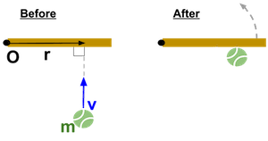

Angular momentum is the rotational counterpart to linear momentum. It tells us how much rotational motion an object has and how difficult it is to change that motion. Like linear momentum, angular momentum depends on both a "mass" component and a "velocity" component — in this case, the moment of inertia and angular velocity.
For a point mass, angular momentum is more generally defined as a vector cross product:
This expression tells us that angular momentum depends not just on the magnitude of $r$ and $v$, but also on the angle between them. The cross product captures the idea that only the component of velocity perpendicular to the position vector contributes to rotation.
When $\vec{r}$ and $\vec{v}$ are perpendicular, the magnitude of angular momentum is simply:
This alternative form is useful when you know the linear speed and distance from the axis but not the moment of inertia directly. It's especially applicable in orbital motion and point-mass systems.
Just as force applied over time gives an object linear momentum, torque applied over time gives an object angular momentum. This relationship is known as angular impulse:
Angular impulse is the product of torque and the duration it acts, and it results in a change in angular momentum.
Taking the derivative of angular momentum gives us the rotational equivalent of Newton's second law:
This directly mirrors the linear case where $\frac{d\vec{p}}{dt} = \vec{F}_{\text{net}}$. In both cases, the rate of change of momentum, linear or angular, equals the net force or net torque applied to the system.
A solid cylinder of mass $4\,\text{kg}$ and radius $0.5\,\text{m}$ is spinning with angular velocity $6\,\text{rad/s}$ about its central axis.
Moment of inertia of a solid cylinder: $I = \frac{1}{2}MR^2$
A figure skater spins with arms extended at $2\,\text{rad/s}$ with $I = 2.5\,\text{kg} \cdot \text{m}^2$. After pulling her arms in, her moment of inertia drops to $1.0\,\text{kg} \cdot \text{m}^2$.
Even though this hints at conservation of angular momentum, we’ll focus only on computing angular momentum in each case.
We’ll revisit what happens to $\omega_2$ later.
Angular momentum describes how much rotational motion an object has. It depends on both how fast it’s spinning (\omega) and how much mass is distributed far from the axis (I). For point masses or orbiting objects, $\vec{L}$ is defined using the cross product of position and momentum vectors: $\vec{L} = \vec{r} \times m\vec{v}$. When $\vec{r}$ and $\vec{v}$ are perpendicular, this simplifies to $L = mvr$.
Angular momentum can be changed by applying torque over time. The angular impulse-momentum theorem (\tau \Delta t = \Delta L) and its derivative form (\frac{d\vec{L}}{dt} = \vec{\tau}_{\text{net}}) closely parallel their linear motion counterparts, reinforcing the deep connection between linear and rotational dynamics.